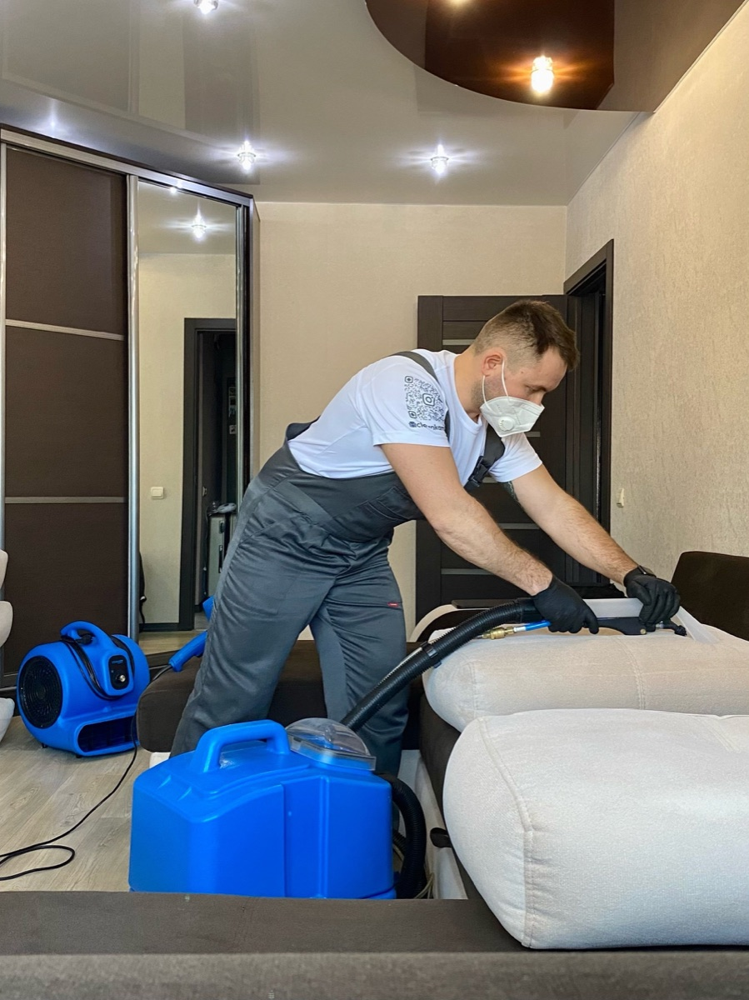
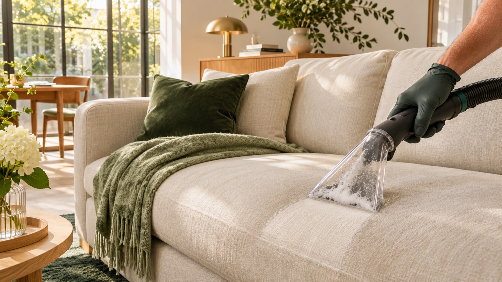
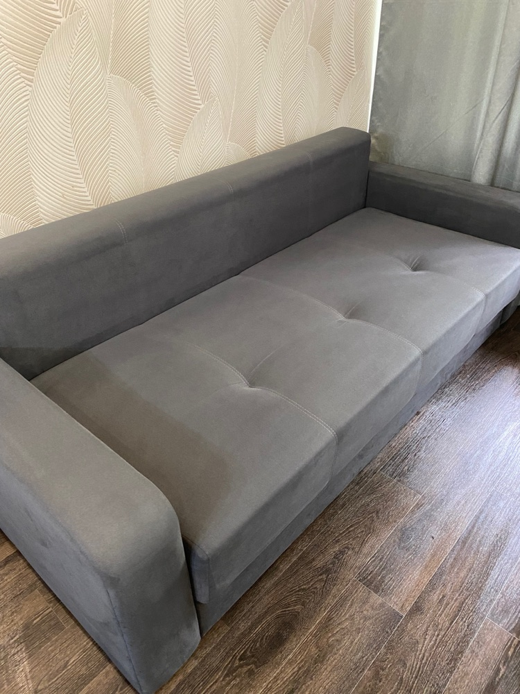
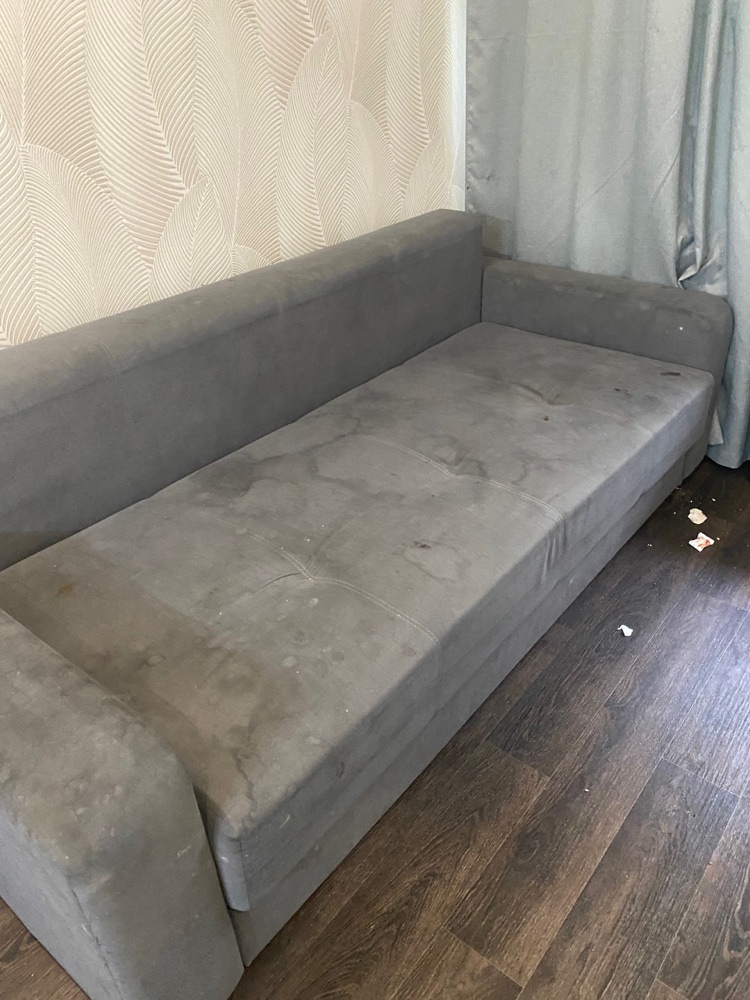

Выездная химчистка
Чистая мебель.
Прямо дома.
Химчистка диванов, матрасов, кресел и ковров. Убираем пятна, пыль и запахи с мягкой обивки.
Рассчитать по фото в MAX Посмотреть цены и расчёт ↓
чистка на дому
Премиальная экохимия
Подбираем средства под материал обивки.
Безопасно для детей и животных
Применяем средства по инструкции производителя.
Оценка стоимости в MAX
По общему фото мебели и крупному плану пятен.
Цены на химчистку
Точную стоимость согласуем по фото перед выездом.


Дополнительная обработка
- Выдвижное спальное место
- Локальная обработка пятен
- Обработка от запаха
Цены в прототипе условные.
Предварительная оценка
Рассчитайте стоимость
Выберите мебель и степень загрязнения. Укажите количество или площадь, чтобы увидеть предварительную цену.
Наши работы
Один диван.
Два состояния.
Сдвиньте ползунок и сравните один и тот же диван до и после химчистки.


ДоПосле
Оборудование и средства
- Чистим на дому
- Привозим оборудование с собой. Обычно работа занимает 1–2 часа.
- Экстрактор для глубокой чистки
- Наносим раствор на обивку и собираем его вместе с загрязнениями. После обработки ткань остаётся влажной.
- Премиальная экохимия
- Подбираем средства под обивку и учитываем, что дома могут быть дети и животные.
Частые вопросы
Как узнать точную цену?
Пришлите в MAX общий снимок мебели и крупные планы загрязнений. По фото оценим объём работы.
Сколько сохнет мебель?
Это зависит от материала, влажности и проветривания. 1–2 часа — ориентир по времени чистки. Сушка занимает дополнительное время.
Чем чистите и безопасно ли это?
Используем экстрактор и премиальные средства, выбранные под ткань. Соблюдаем инструкцию. Пользоваться мебелью можно после полного высыхания.
Можно заказать чистку одного матраса?
Пришлите фото и размеры матраса. Уточним стоимость и условия выезда.
Что если пятно не отойдёт?
Результат зависит от ткани, давности пятна и предыдущих попыток его вывести. После осмотра объясним, чего ожидать.
Оценка по фото
Фото в MAX.
Цена до выезда.
Сделайте общий снимок мебели и сфотографируйте пятна крупным планом.
Написать в MAX ↗
Демо. Ссылка на чат CleanKam34 пока не подключена.